SDGsポスター作製
レイアウト候補
どういった写真を使うかなど決めるためにも大体のレイアウトの方向性を決めた。
レイアウト候補を出すにあたって
・文字だらけのポスターにしないこと
・写真や図でも伝えるポスターにすること
・活動の雰囲気から実際の作品までの写真が見えるデザインにすること
の三つを意識し意見を出し合った。
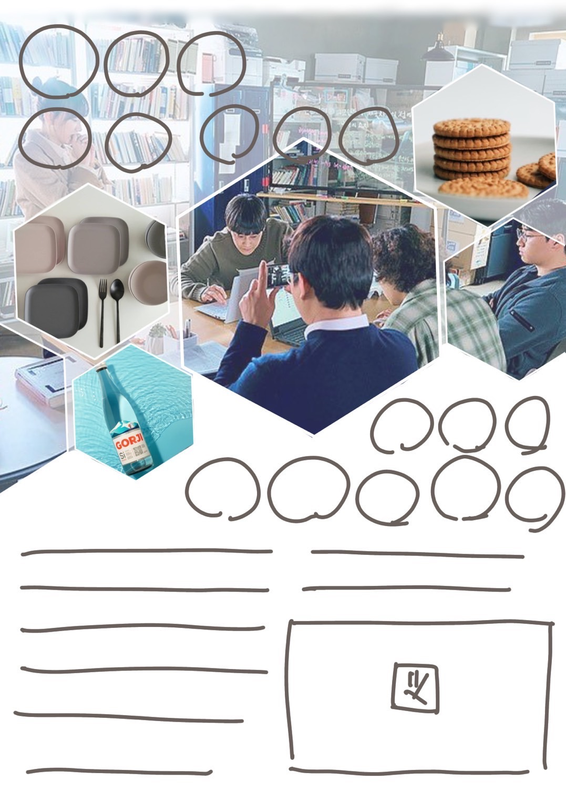
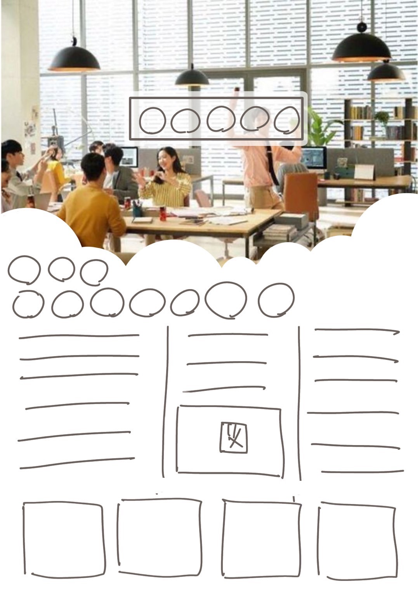
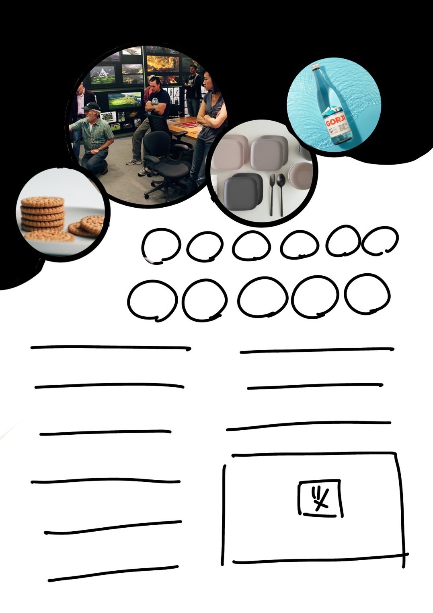
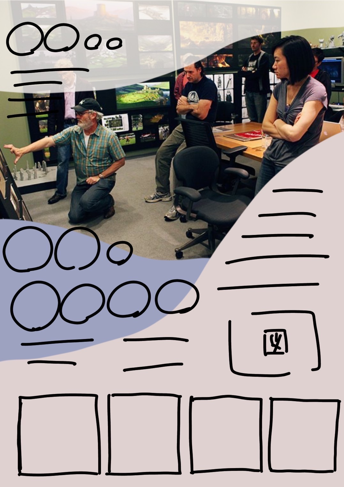
ベース作成
レイアウト担当以外からの意見も聞き、一つ目のようなデザインで進めていくことに決定。
写真の選定をお願いし、その中からさらにデザインや説明に合う写真を当てはめていく。
文字や図が完成したらそれらも当てはめていく（未完成状態）。
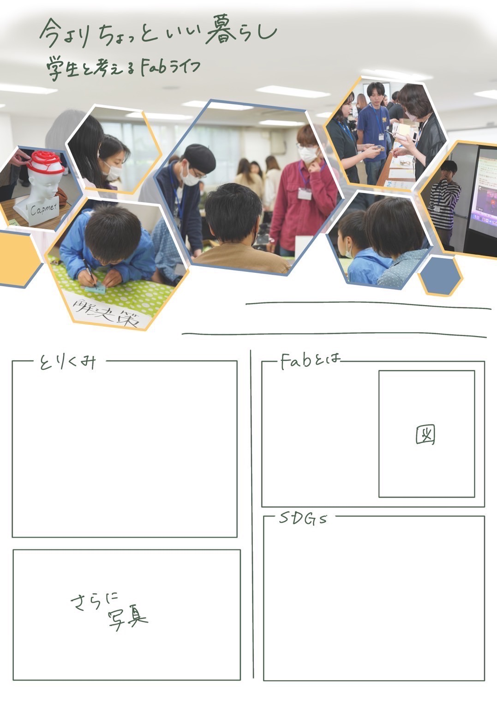

＜作成しつつ感じた問題点-レイアウト部分＞
・写真部分と文章が分かれすぎていて下部分が寂しい
・うまく全体的な統一感が出せない。
・写真構成の調整が難しく、写真や図に合わせた細かい調整が即座にできない
道用さんからのフィードバック
・日々の困りごとが不明確
・シビックテック
市民のテクノロジーの活用で問題を解決する仕組みづくりを作る。
・仕組みづくり
・写真部分が大きい
・目指すもののイメージを見せた方がいい
・未来を見据えて今活動していること
レイアウト改変
実際に作成してみて感じた反省点や、道用さんからいただいたフィードバックを元にレイアウトを大きく変更することにした。
新しいレイアウトで
・構成を難しくなくする。
・図や写真に合わせた変更を簡単にする。
・写真部分は周りに配置、説明部分をメインにする。
・色味を全体的に載せる。
・読む流れを作る。
を意識し、レイアウトの構成を考えた。
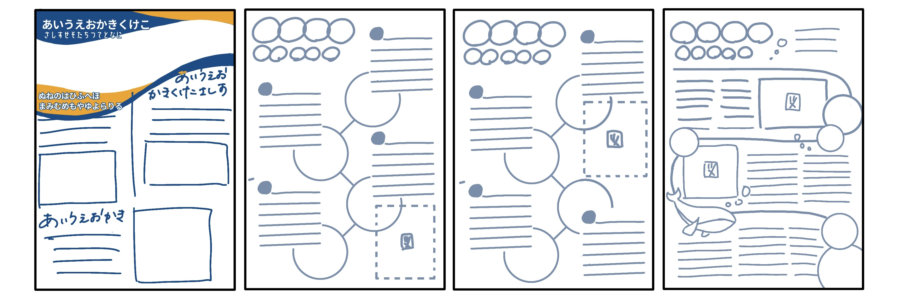
シンプルなデザインに写真配置や図、文章などの調整が簡単にでき、イラストなどで雰囲気の統一化をはかる形の
四つ目のデザインでもう一度練り直すことにした。（クジラなどはまだ仮状態。変更する可能性大いにあり。）
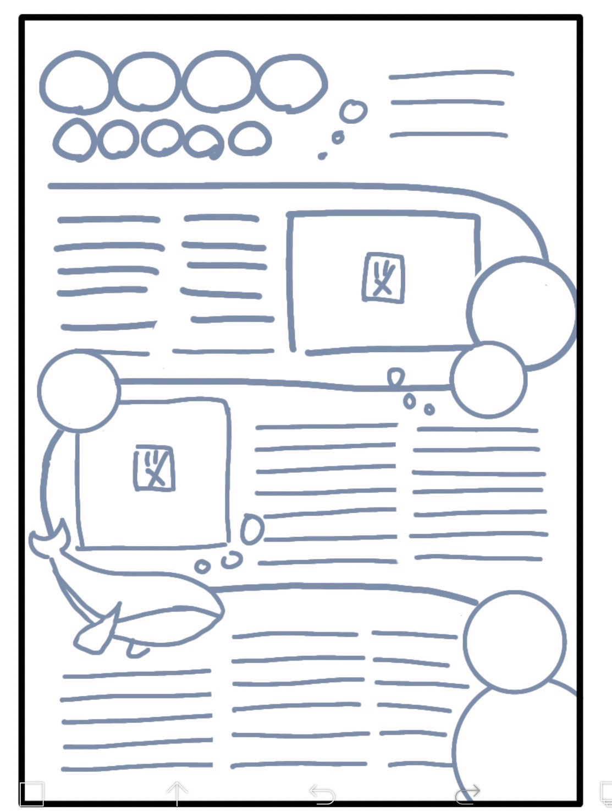
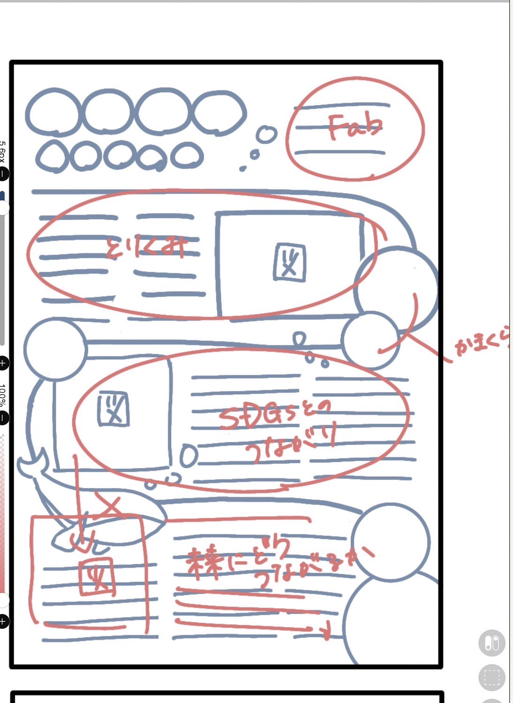
実際に入れる文章校正などを考え直し、前回のレイアウト時の反省を生かし、調整がすぐにできるよう
早々にイラストレーターに書きおこしを行う。
デザイン
レイアウトを考え直した際に、読む流れを意識してデザインをした。
その流れを崩さないデザイン装飾をしたいと考えた。
神奈川大学のキービジュアルであるクジラをデザインに取り入れたら面白いんじゃないかと考え、
レイアウト時にデザインをしていた。
その発想からどんどん連想していき、ポスター全体で海を表現するデザインを提案した。
まず、全体を［タイトル・１段目・２段目・３段目］と分けて色付けを行った。
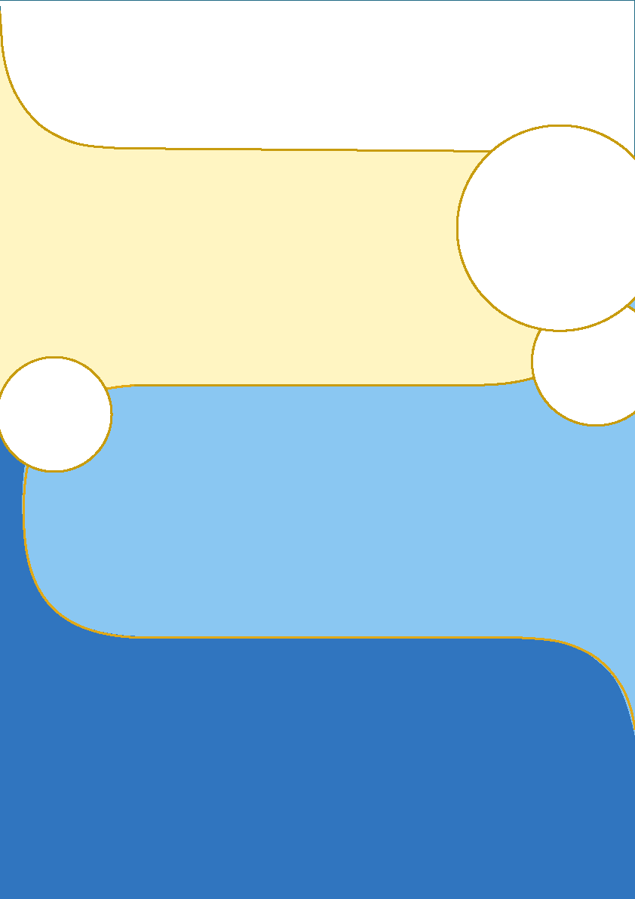
それぞれの境目にクジラのように装飾を行うことにした。
①足跡
②小魚
③クジラ
またタイトル部分は、鎌倉の象徴的な鳥である鳩をデザインし、鎌倉から神奈川大学へとつながるようデザインをした。
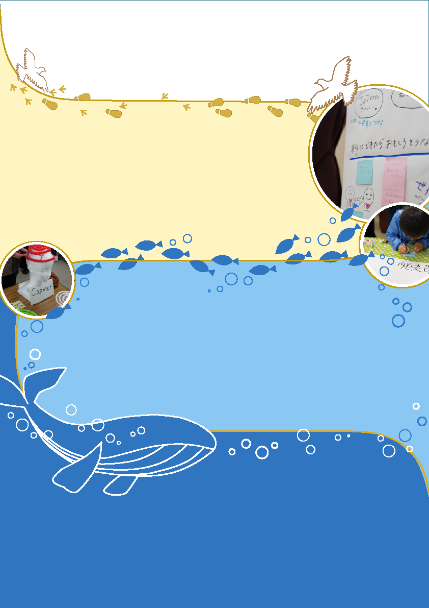

全体的なそれぞれの場所における文字数であったり装飾に差があり、寂しく見える部分があったため、
背景に方眼を加えたり、ステッチのようなデザインなどの変化を加えた。
さらに上下に波線の枠を付け上下逆の色付けをすることで、全体的な統一感やつながりを意識した。
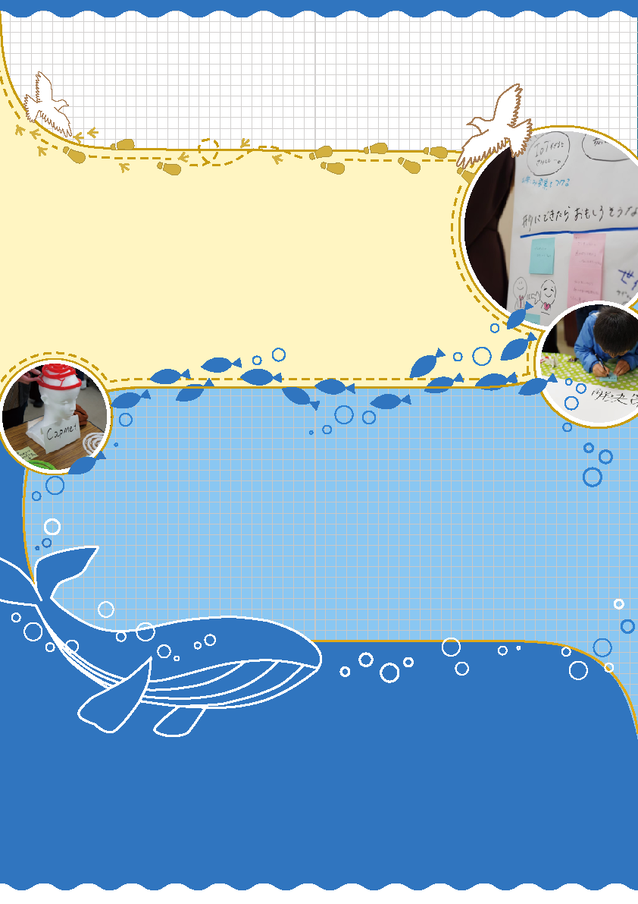
他担当者が作ったものをデザインと合うように、それぞれ色やサイズなどの調整を行った。
また道用さんからの最終確認でのアドバイスなども反映させつつ完成させた。
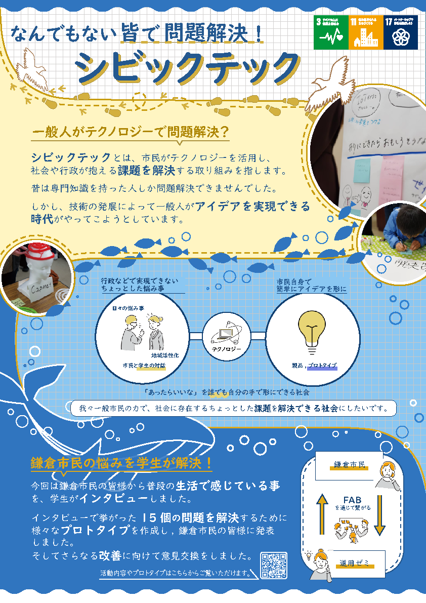
感想
全体のバランスをとにかく意識した。色味はもちろん文字の大きさなどから、
イラストと文字までの距離にいたるまで何回も調整を重ねた。
またデザインを足しすぎないよう、時には引き算をしながらデザインをした。
参考に様々なポスターや文章レイアウトの例を調べてみることで、あたらしい発見が多くあった。
今回レイアウトデザインを担当したことで、かなりイラストレーターが使いこなせるようになった。
チームで作業するため、誰が見てもわかりやすいようにイラストレーター内の環境を整えて作業を行った。
いつもは自分さえ分かればいいと作業していたが、レイヤーの整理をしながら作業することで、
細かい変更にもすぐに対応でき、作業効率も上がりとても良かった。
多少面倒くさくても、イラレのレイヤーは常にわかりやすくしておくことを強くお勧めする。
わかりやすすぎるレイヤーたち↓↓
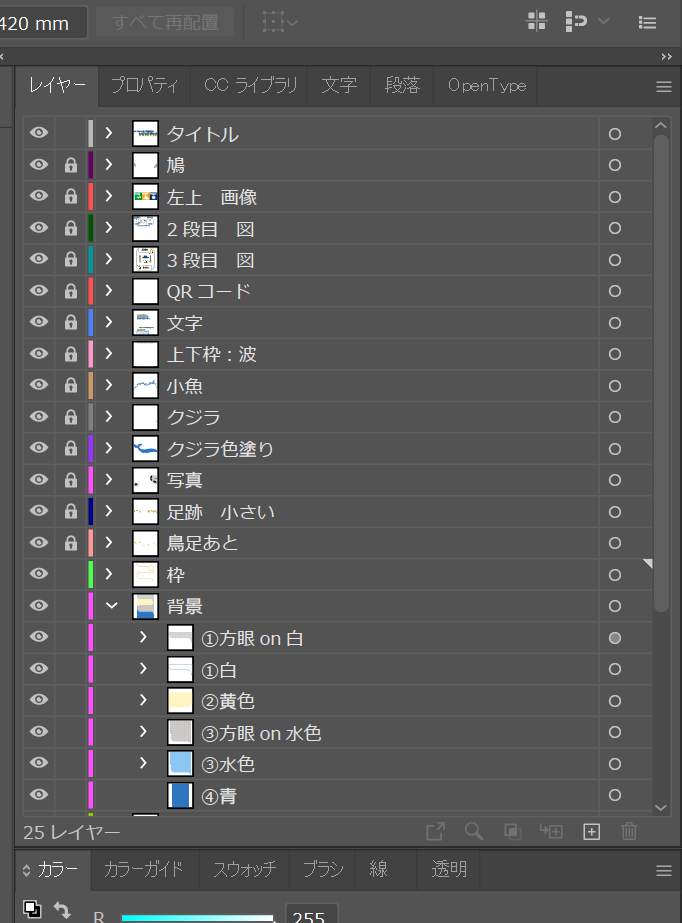